BRICOHAMS · MORSE TUTOR · v2.1.1 · Edición 28/10/2026
Instalar, aprender Morse, comunicar varias pantallas y montar una caja con batería.
Instalador del tutor · Instalador del reloj · Catálogo de cajas y descargas STL · Código y documentación técnica
Qué muestran las imágenes. Las capturas PNG son de la interfaz web real incluida en el firmware, servida por la herramienta de prueba con datos de dispositivo simulados. Las vistas TFT en SVG son ilustraciones de la distribución y los menús, no fotografías, capturas de framebuffer ni pruebas físicas. Se han reconstruido a partir del código y del catálogo de textos. El aspecto de la fuente, colores y márgenes puede variar en la placa. Los mensajes y estadísticas son ejemplos. No se ha comprobado el montaje, la autonomía ni el enlace entre placas reales.
Lee la referencia serigrafiada del PCB, su revisión, controlador LCD y controlador táctil. Una placa Sunton de 3,2″ no se convierte en Freenove por tener la misma resolución. Una caja imprimible tampoco incorpora soporte al firmware.
| Referencia/perfil del instalador actual | Imagen horizontal | Entrada | Estado |
|---|---|---|---|
CYD 2,8″ ILI9341 · esp32-2432s028r | 320 × 240 | XPT2046 resistivo; DIT22/DAH27 | Compilado; sin prueba física en esta sesión |
CYD 2,8″ ST7789 · esp32-2432s028r-st7789 | 320 × 240 | XPT2046 resistivo; DIT22/DAH27 | Experimental; confirmar revisión |
Freenove FNK0114L 3,2″ · freenove-32-st7789 | 320 × 240 | XPT2046; contactos externos deshabilitados | Configuración basada en documentación oficial |
CYD 4″ ST7796 · esp32-4in-st7796 | 480 × 320 | XPT2046; contactos externos deshabilitados | Confirmar cableado y revisión exactos |
| Característica | N · Sin táctil | R · Resistivo | C · Capacitivo |
|---|---|---|---|
| Interacción | No detecta toques | Presión; dedo, uña o stylus romo | Contacto capacitivo; normalmente dedo |
| Controlador documentado de esta familia Sunton | Ninguno | XPT2046 por SPI | GT911 por I²C; no FT6206 por suposición |
| Puntos y gestos | 0 | 1; no permite squeeze táctil | La capacidad del chip no implica gestos o multitáctil implementados en la aplicación |
| Precisión | No aplica | Depende de calibración y panel; útil con puntero fino | Depende del sensor, vidrio y controlador |
| Imagen | Sin capa táctil adicional | Las capas pueden reducir transmisión y contraste | Suele ser más transparente; no garantiza mayor brillo que otro panel |
| Caja entregada | Base/tapa específicas de envolvente provisional | Base/tapa con acceso al área táctil | Ventana de acceso más amplia, pendiente de medir el vidrio real |
| Firmware Bricohams 2.1 | No hay perfil publicado para estas tres referencias. No flashear el perfil Freenove por semejanza. Se entregan diseños mecánicos y estudio de compatibilidad, no una adaptación eléctrica no verificada. | ||
Para portar N habría que evitar la calibración bloqueante, añadir navegación completa por botones o web y verificar los GPIO. La web actual no controla todos los menús TFT ni sustituye todas sus actividades. Para C hacen falta controlador GT911, reset/IRQ y transformación de coordenadas; el firmware actual sólo maneja XPT2046. Que el GT911 permita varios contactos no añade automáticamente gestos o palas simultáneas.
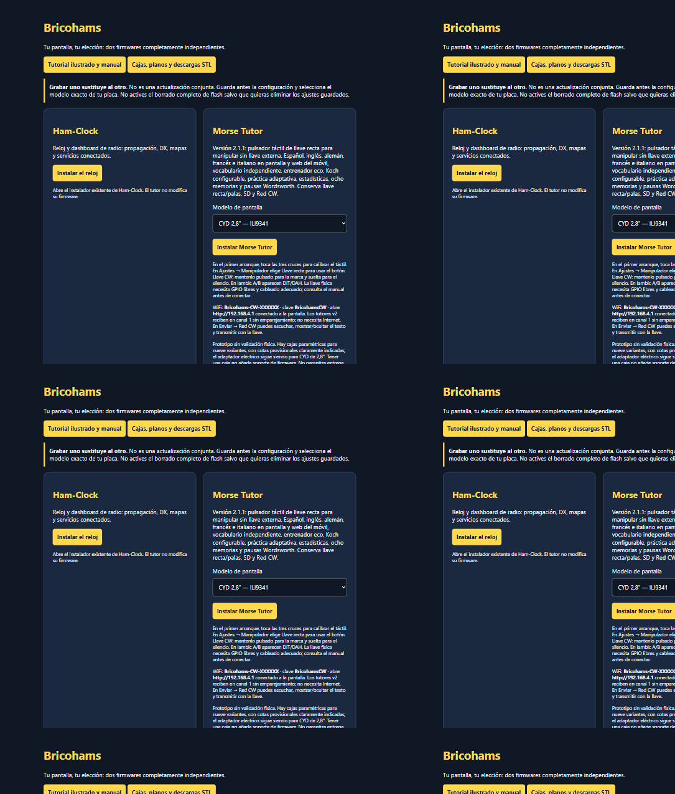
Para recalibrar: con el firmware ya iniciándose, mantén BOOT cuando la aplicación comprueba ese botón. Mantenerlo durante reset puede activar el bootloader de ESP32 en vez de recalibrar. Si sucede, suelta BOOT y reinicia.
En la TFT: abre el ajuste, usa -/+ y pulsa Guardar.
Los ajustes numéricos clásicos se prueban en RAM; volver sin guardar puede mantener el valor durante esa sesión,
pero no garantiza conservarlo tras reiniciar. Los nuevos selectores de idiomas/secuencia/pausa utilizan un borrador:
no se aplican hasta guardar. Ante “Error al guardar”, no des por persistido el cambio.
| Ajuste | Valores / valor inicial | Qué cambia y dónde |
|---|---|---|
| Velocidad | 3–50 WPM; inicial 18 | Velocidad de elementos Morse. En TFT; la web no edita este valor. |
| Farnsworth | 3–velocidad de carácter; inicial 12 | Velocidad efectiva reducida al alargar separación; nunca superior a velocidad de carácter. |
| Tono | 300–1800 Hz; inicial 700 | Frecuencia del sonido, no volumen. DIT permite probarlo en la pantalla de ajuste. |
| Manipulador | Llave recta / Iambic A / Iambic B; inicial recta | Contactos secos externos. En recta usar DIT a masa; no aplicar tensión. |
| Indicativo | 1–9 caracteres A–Z, 0–9 y /; inicial NOCALL | Identidad local de la TFT. El campo de envío del móvil se rellena por separado y no guarda este ajuste. |
| Brillo | 10–100 %; inicial 80 | PWM del backlight; no modifica el volumen ni mide batería. |
| Nivel Koch | 2–longitud de secuencia; inicial 2 | Usa sólo el prefijo del orden seleccionado. Se limita al escoger un conjunto más corto. |
| Largo grupo | 1–10; inicial 5 | Número de caracteres de grupos de práctica donde corresponda. |
| Restaurar | Confirmar Sí/No | Restaura ajustes del tutor; conserva memorias, estadísticas y calibración. No restaura ni modifica Ham-Clock. |
| Idioma pantalla | Español / English / Deutsch / Français / Italiano; inicial español | TFT y clientes web de esa unidad; persistente. Disponible también en web. |
| Idioma palabras | Los mismos cinco; inicial español | 20 palabras básicas por lengua para las actividades de vocabulario, independientes de los menús. También en web. |
| Secuencia Koch | Bricohams / letras primero / números primero / propio | Orden progresivo; no importa cursos de otras plataformas. También en web. |
| Conjunto propio | 2–40 símbolos Morse ASCII distintos; inicial KM | Sin duplicados ni espacios. Guardarlo en TFT selecciona ese conjunto; en web hay que elegir “Conjunto propio”. |
| Pausa palabras | ×1–×5; inicial ×1 | Wordsworth: multiplica la pausa de siete unidades, además de Farnsworth. No cambia letras/tono ni reproducción de Red CW. |
El teclado TFT muestra dos páginas de símbolos: ... cambia página,
_ introduce espacio, Borrar elimina el último carácter y Guardar valida.
En indicativos no se acepta espacio; en mensajes sí. No rellenar el campo con un indicativo de otra persona.
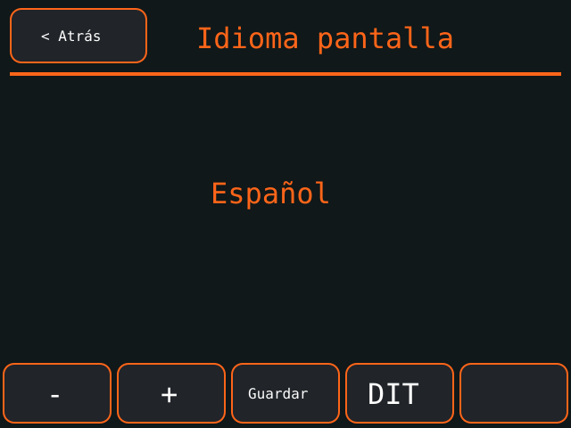
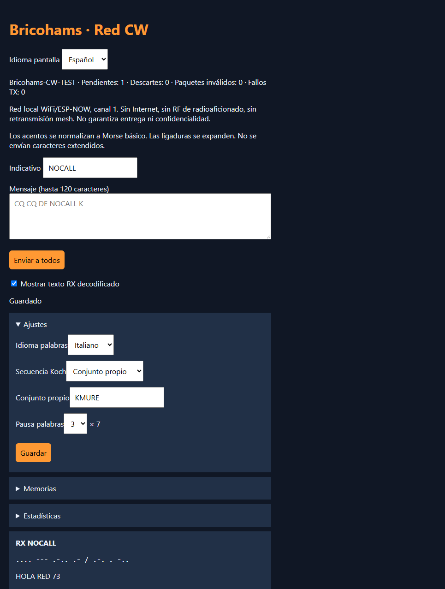
La UI conserva los acentos. Los mensajes y TXT se convierten al Morse básico:
mañana → MANANA, Grüße → GRUSSE, été → ETE,
città → CITTA, œ → OE, æ → AE.
No se transmite Morse nacional extendido. UTF-8 inválido, alfabetos no admitidos y resultados de más de 120 caracteres
se rechazan. La expansión ß → SS cuenta como dos caracteres. No confundir idioma de vocabulario con traducción automática.
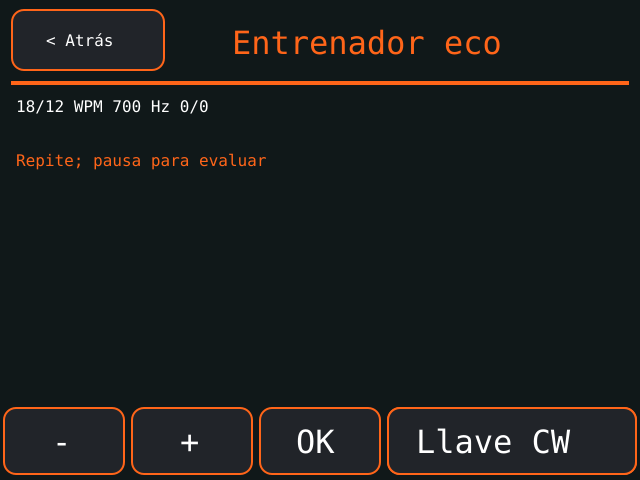
Si necesitas más tiempo entre palabras, prueba pausa ×2 o ×3; no ralentices los puntos/rayas sólo para insertar más silencio.
El tiempo de punto nominal es 1200 / WPM milisegundos. La raya dura tres puntos.
Las pausas usan la temporización de Farnsworth y, entre palabras, el multiplicador Wordsworth.
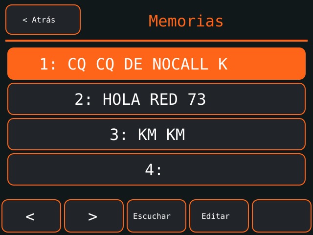
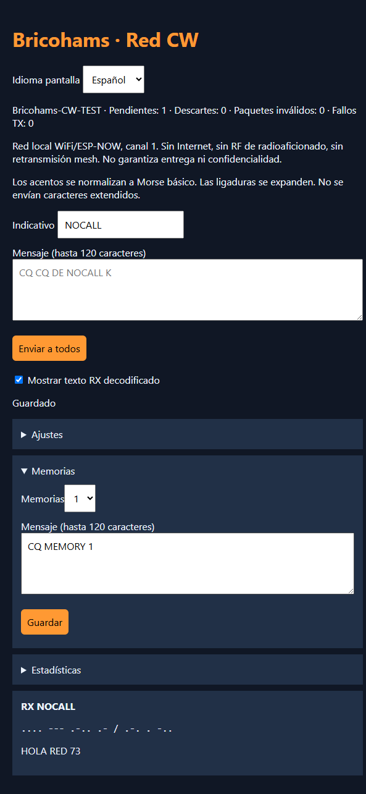
Estadísticas cuenta grupos correctos/intentados y errores por posición esperada. Omisiones y sustituciones penalizan el carácter esperado; letras extra hacen fallar el grupo sin sumar intentos de símbolos ajenos al objetivo. Se incluyen ejercicios evaluados, no toda la manipulación libre. Los contadores se reducen proporcionalmente al saturarse.
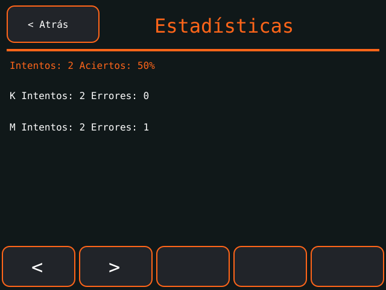
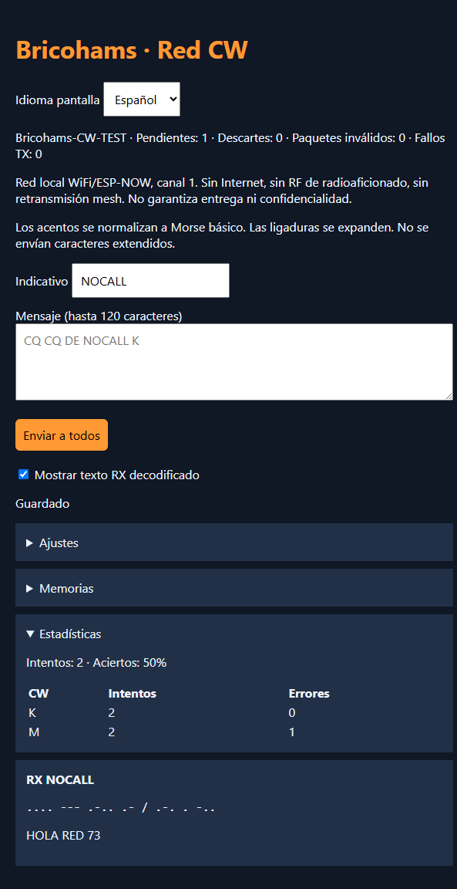
Antes de apagar: sal de la actividad con Atrás. Las estadísticas se guardan al salir, no con cada carácter; un corte de corriente puede perder resultados recientes. Si guardar falla, corrige el problema antes de apagar.
Bricohams-CW-XXXXXX, con sufijo propio.BricohamsCW.
Acepta permanecer conectado aunque el sistema diga “sin Internet”.http://192.168.4.1 (HTTP, no HTTPS). Si el móvil usa datos móviles para evitar esa red,
desactiva temporalmente su cambio automático de red o usa modo avión y vuelve a activar WiFi.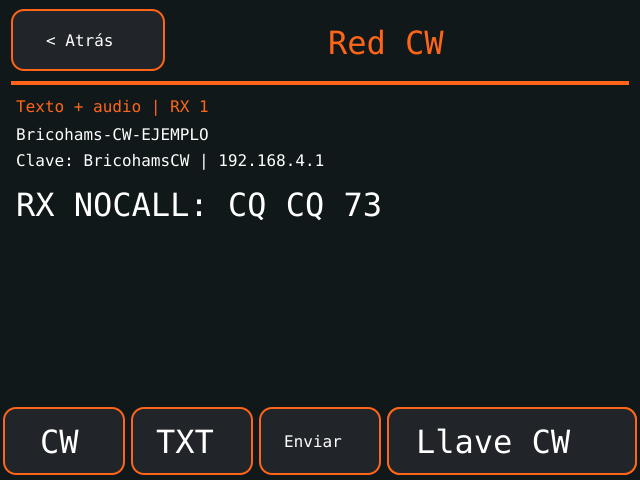
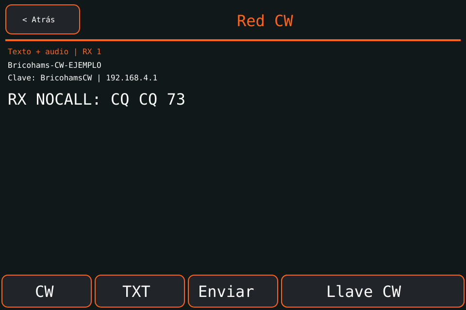
CQ CQ DE NOCALL K como mensaje de prueba si aún no has configurado una identidad.
Sustituye NOCALL por tu indicativo cuando corresponda. Pulsa Enviar a todos.TXT para texto+audio o CW para ocultar el texto.
En el móvil usa “Mostrar texto RX decodificado”. Al reactivarlo se revela el historial aún disponible.
El Morse escrito sigue visible: se oculta la transcripción, no se cifra el mensaje.SOS = ... --- .... La superficie resistiva tiene más latencia que una llave física:
empieza despacio y usa un puntero romo si resulta más cómodo.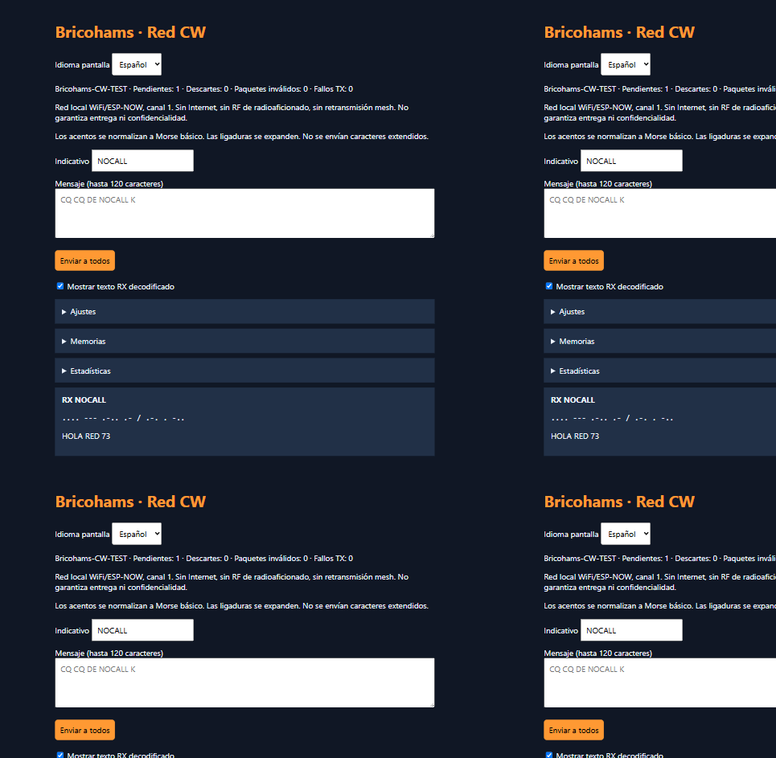
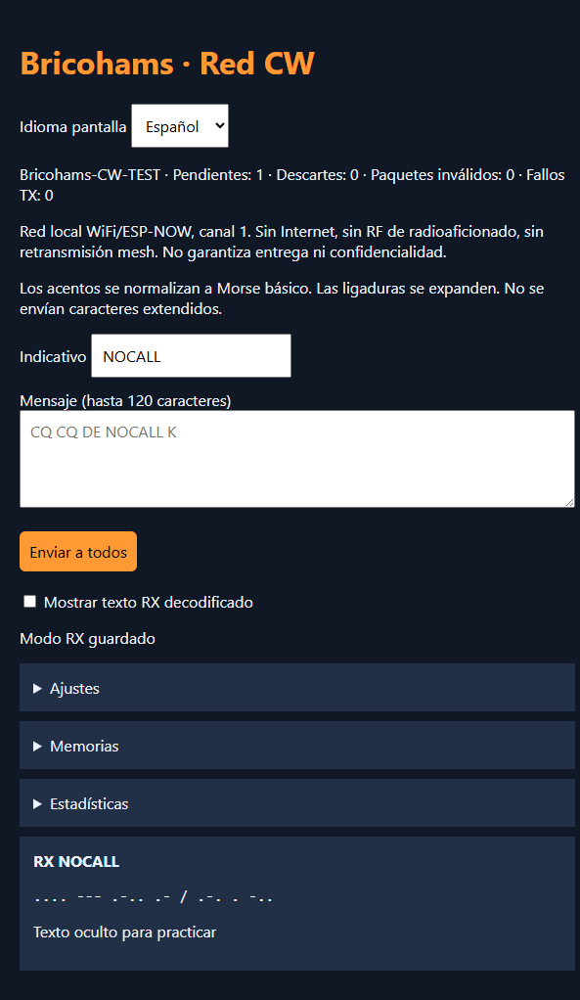
La recepción está activa fuera del menú Red CW, pero hay que entrar en él para escuchar la cola. El historial web guarda 12 mensajes; hay 12 plazas de reproducción, 12 datagramas pendientes y 8 transmisiones. Se reintenta tres veces y se deduplica una ventana de 64. Al llenarse se notifican descartes.
No es radioafición RF ni mesh: no hay LoRa, repetición entre saltos, Internet ni bandas de radioaficionado. Alcance, entrega y orden global no garantizados. AP con clave pública de fábrica y ESP-NOW sin cifrado. El checksum no autentica a la persona ni al indicativo. No envíes secretos ni datos personales. Hasta cuatro clientes por AP. Para comunicar otra habitación fuera de alcance no basta con colocar una tercera unidad en medio.
Disponible en modo Llave recta en Práctica, ejercicios de respuesta y Red CW. No exige configurar una llave externa ni habilitar GPIO. La superficie se ilumina mientras está pulsada. Arrastrar el dedo fuera cancela la marca; para volver a manipular, suelta y pulsa de nuevo. Arrastrar dentro desde otro control no inicia una marca. Durante la escucha de un ejercicio no se admite manipulación: suelta y vuelve a pulsar al acabar. Atrás/cambio de actividad detiene la señal. El botón sólo manipula Morse local: no es una salida de transmisor RF ni un pulsador web en el móvil.
Conecta con la alimentación quitada. En CYD 2,8″ se reservan DIT GPIO22 y DAH GPIO27, activos a masa. Una llave recta cierra DIT–GND; palas cierran DIT–GND y DAH–GND independientemente. Usa contactos secos; nunca señales de un transmisor, 5 V, 12 V ni un circuito de keying externo.
Consulta el manual del adaptador, Gerber y cableado antes de fabricar. Es un prototipo CYD 2,8″; no asumir que sus conectores coinciden en Freenove/4″. En esas dos familias el firmware deja deshabilitados los contactos externos por falta de un conector verificado.
El tono permite cambiar frecuencia, no implementa un control de volumen universal. El adaptador no aporta aislamiento para controlar un transmisor: este firmware no incluye salida de manipulación RF.
practica.txt:KM MK KMMK CQ CQ DE NOCALL K HOLA RED 73
El bus SD es VSPI: SCLK18, MISO19, MOSI23, CS5 en los perfiles actuales. No conectes otro periférico a esos pines suponiendo que están libres.
Abre el catálogo ilustrado con las nueve variantes y sus descargas. Cada variante ofrece reloj con batería y tutor con plataforma de palas, conservando el mismo diseño y wordmark BRICOHAMS. No son piezas intercambiables entre tamaños: elige un conjunto completo.
En el tutor, las palas mecánicas son auxiliares comunes a los nueve conjuntos. El pivote impreso no conduce: cablea el contacto móvil a GND y el fijo a DIT/DAH sólo si esos pines están habilitados y verificados en la placa. La caja de una Freenove o 4″ no habilita palas eléctricas por sí sola. Consulta las instrucciones de pivotes/contactos del manual mecánico.
| Síntoma | Comprobar, por orden |
|---|---|
| No aparece puerto USB | Cable de datos, puerto directo, alimentación y controlador USB específico del fabricante. Cierra otro monitor serie antes de flashear. |
| No conecta el flasheador | Chrome/Edge de escritorio, HTTPS/localhost, permisos del puerto. BOOT/reset según instrucciones de la placa; no manipular pines desconocidos. |
| Imagen blanca, colores erróneos o desplazada | Perfil/revisión/controlador y alimentación. No alternar firmwares al azar ni asumir que todas las 3,2″ son iguales. |
| Calibración no termina | ¿Es realmente XPT2046 resistivo? Una N no puede tocar cruces y una C GT911 no funciona con este controlador. Selección de perfil y cableado. |
| Toque invertido o impreciso | Recalibrar el perfil correcto; pulsar cruces sin mover ni presionar el bisel. No apretar más como solución a un controlador incorrecto. |
| Web local no abre | Conectarse al SSID de esa unidad, aceptar “sin Internet”, usar http://192.168.4.1 y evitar cambio automático a datos móviles/VPN. |
| Otra TFT no recibe | Ambas en v2, próximas, sin obstáculos para primera prueba; entrar Red CW para reproducción. Ver contadores de descartes/fallos y Serial. No hay relé mesh. |
| Recibe audio pero no texto | Modo CW/checkbox RX; habilitar TXT o la casilla de decodificación. No es un fallo del idioma. |
| Sin audio | Prueba de tono, perfil, amplificador y alimentación. No conectar altavoz a GPIO. En Freenove confirmar FNK0114L y circuito de audio. |
| Palas no responden | Modo seleccionado, contactos a GND y pines reales. En Freenove/4″ están deshabilitadas por defecto; no mover DAH al backlight. |
| Caracteres incorrectos | Velocidad real de manipulación frente al ajuste, contactos/retorno y pausas. Revisar A/B. Comprobar normalización de acentos. |
| SD no lista archivos | FAT, TXT en raíz, nombre corto, máximo 20; reiniciar con tarjeta insertada. No asumir exFAT ni carpetas. |
| Error al guardar | No dar por guardado el valor. Ver Serial a 115200 baud y disponibilidad NVS; no borrar toda la flash como primera solución. |
| Power bank se apaga / reinicios | Capacidad de corriente, cable y apagado por baja carga. Probar fuente USB estable fuera de la caja. No modificar la protección de batería. |
| La caja no ajusta | No forzar vidrio/PCB: medir, corregir parámetros y probar un bisel. Malla cerrada no implica ajuste mecánico. |
Además del español mostrado arriba, estas son capturas de la web real con la misma API de prueba. Cambiar idioma no modifica el protocolo ni traduce los mensajes recibidos.
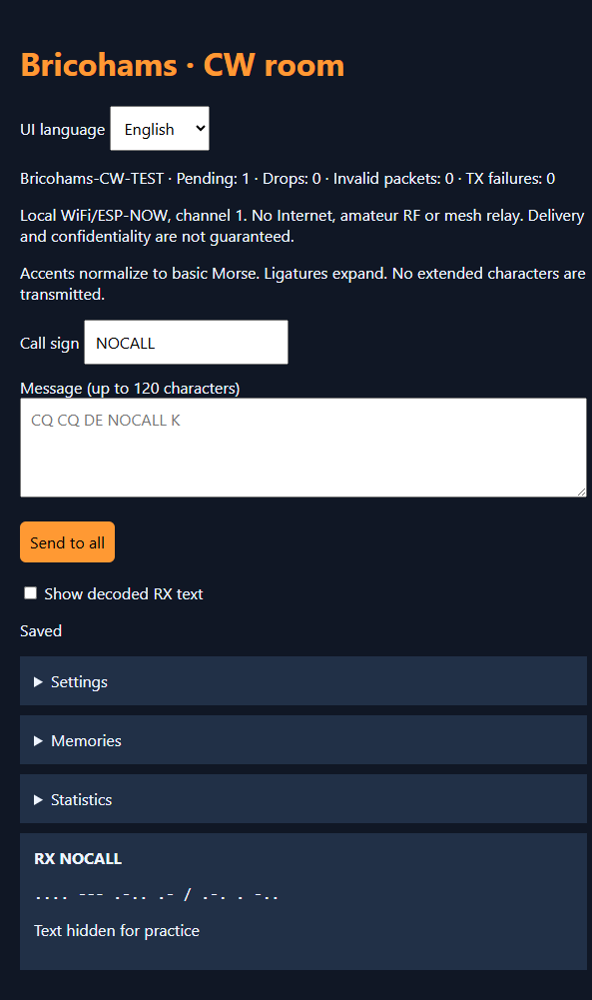
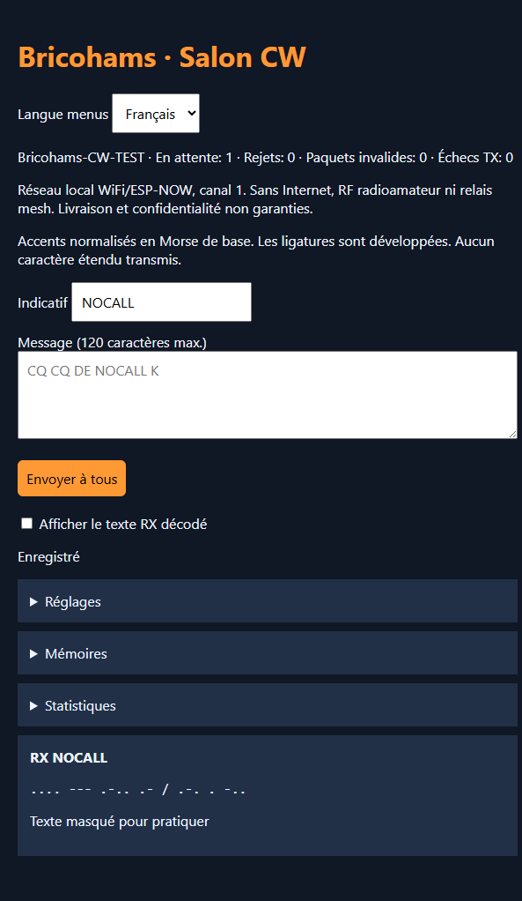
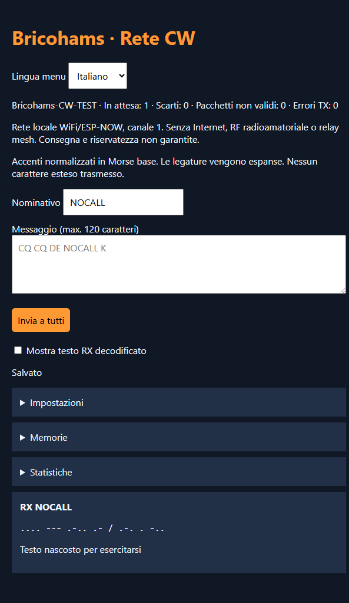
Las ilustraciones se generan con node morse-tutor\tools\render-manual-tft.mjs.
Las capturas web se tomaron sirviendo node morse-tutor\test\browser-fixture.mjs en localhost:8174,
usando el HTML y traducciones incluidos en el firmware. No es una simulación de radio ni de NVS.
El catálogo mecánico usa mechanical/display-profiles.json; sus fuentes y limitaciones se publican junto a cada variante.
Fuentes de hardware consultadas el 28/10/2026: definiciones y esquemas Sunton, ejemplos oficiales Freenove, LCDWIKI 3,5″ y LCDWIKI 4″. Son familias conocidas/documentadas, no un ranking verificable de las más vendidas. La autoría Bricohams de esta aplicación no elimina licencias y derechos de dependencias e historial.